Hi! My name is Phorlamace
SCiUS-TU-SKR
Personal Interests
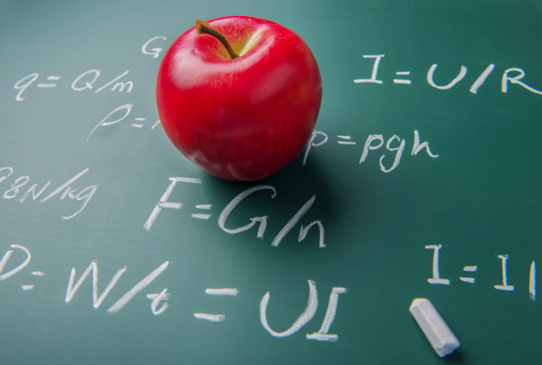Physics
I enjoy studying and solving physics problems during my free time, especially analytical problems that require logical reasoning and mental visualization. This hobby has enhanced my systematic thinking, improved my ability to connect theoretical concepts with real-world scenarios, and deepened my understanding of natural phenomena.
sport-basketball
I have participated in school basketball competitions, which have helped me improve both physically and mentally. Through this sport, I have developed teamwork, strategic thinking, and communication under pressure—skills that are essential in both academic and real-life contexts.
Skills
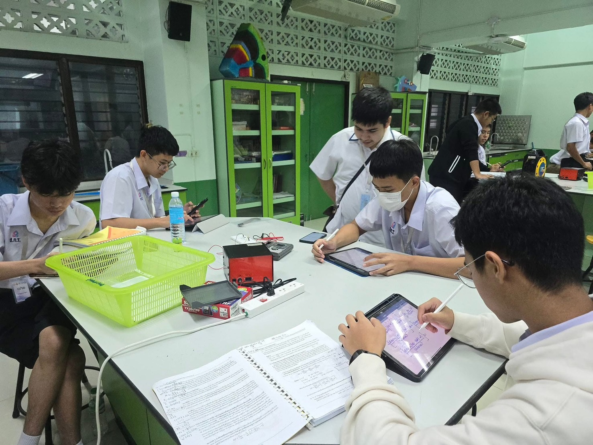Circuit Design
I participated in an engineering preparation camp where I was able to design and assemble electronic circuits by myself. This hands-on experience allowed me to gain a solid understanding of how circuits work and to help my peers complete their projects as well. In addition, I joined the Physics Olympiad training camp (POSN), where I worked collaboratively with teammates to build and troubleshoot circuits, supporting others in understanding the function of each component and contributing to the success of group activities.
Critical Thinking
During the engineering camp and POSN camp, I often took the initiative to question problems in depth, analyze given data, and propose logical solutions. These experiences enhanced my ability to make thoughtful decisions and helped me support others in understanding problem-solving strategies and processes.
Communication Skills / Teamwork & Collaboration
I competed in a science talent competition as part of a three-person team. Effective communication was critical, particularly during the hands-on experiment phase, where tasks had to be divided and coordinated efficiently under time constraints and pressure. Clear and mutual communication played a key role in our success and allowed us to advance to the next round.
Education
Princess Chulabhorn Science High School Lopburi
2021-2024
SCIENCE CLASSROOMS IN UNIVERSITY- AFFILIATED SCHOOL PROJECT (SCIUS) Thammasat University-Suankularb Wittayalai Rangsit School 2024-Present
Achievements
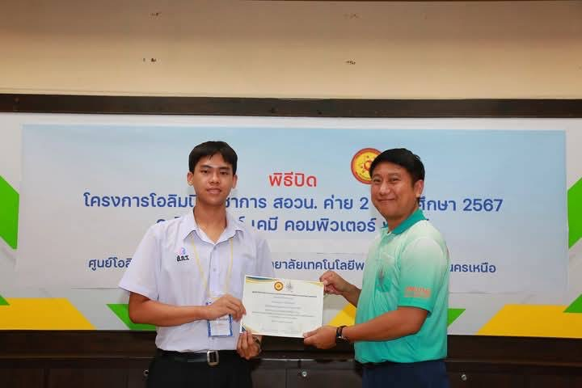 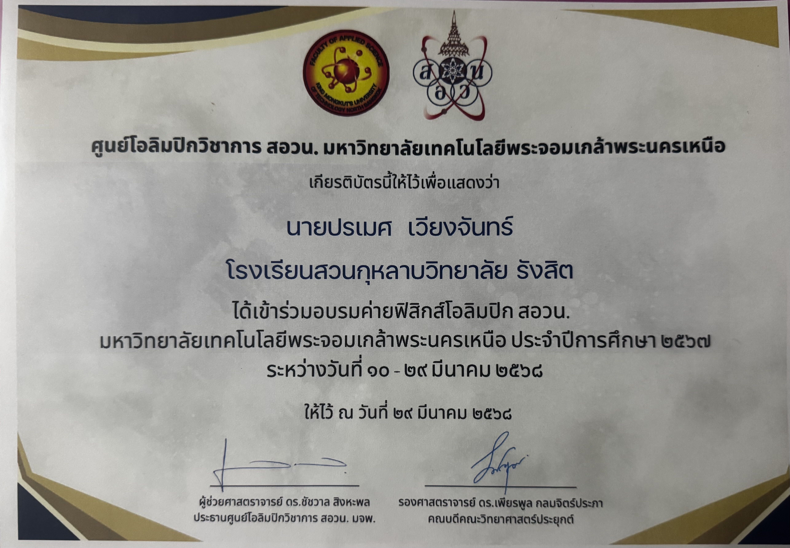Participated in POSN Physics Olympiad Training Camp (Camp 2) at King Mongkut's University of Technology North Bangkok, Academic Year 2024, from March 10-29, 2025
Scored 100/100 in O-NET Mathematics (Grade 9)
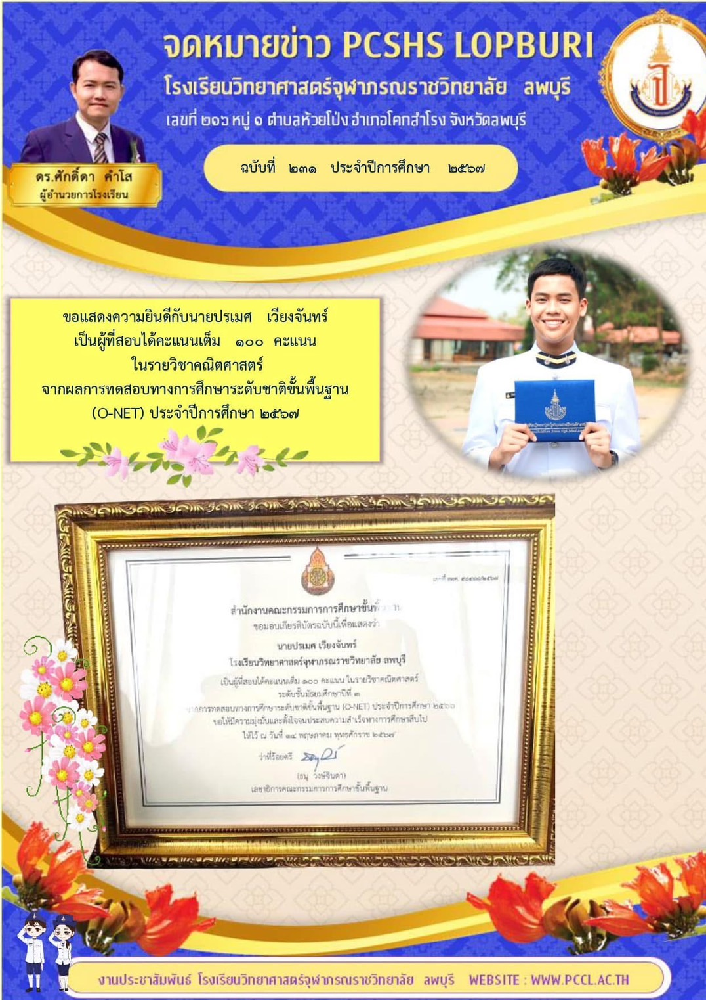Scored 560 on TU-GET (PBT), October 27, 2024
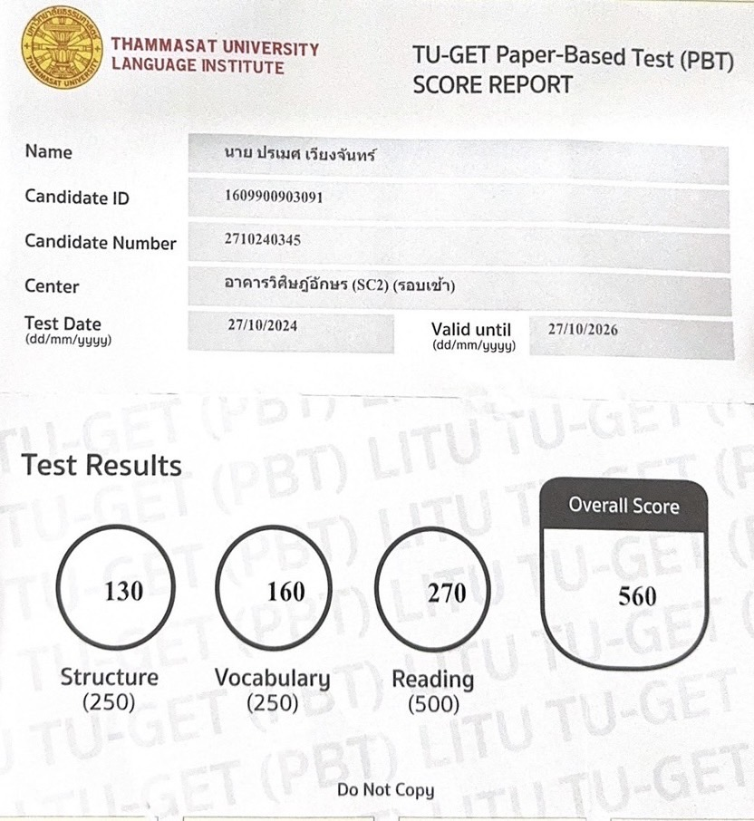Bronze Medal, National Science Talent Competition (Grade 7-9 level), the 70th National Academic Skills Competition
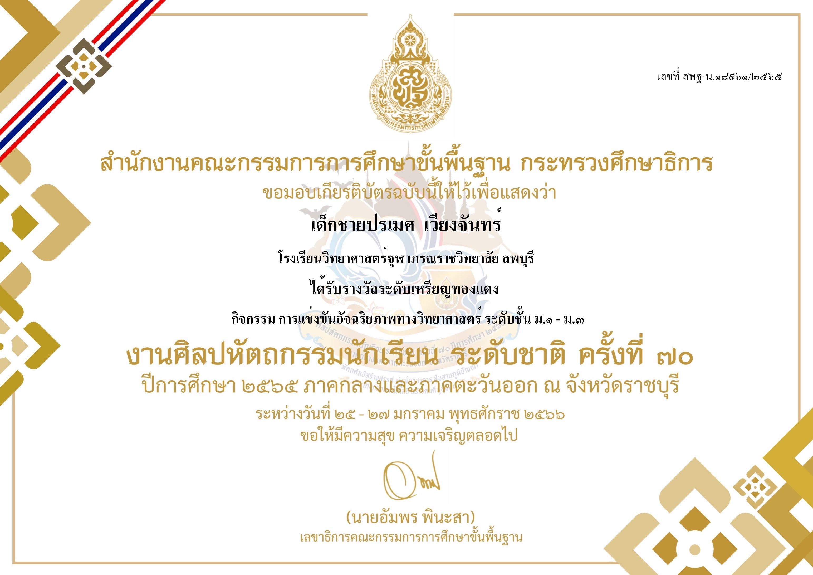Activities
Sci-Soft Power Innovation Hackathon 2024
Joined a Hackathon during an innovation and technology skill development camp, where I practiced teamwork under time constraints and learned to apply design thinking. Starting from breaking down complex problems, I worked toward developing real-world solutions with market potential.
Engineering Camp 2023
Attended an engineering exploration camp , which introduced me to various engineering fields through hands-on workshops—such as building weight-bearing bridge models, basic coding, and electrical circuit assembly. This experience provided insights into the nature of different engineering disciplines and helped me make an informed decision about my future academic path.
CubeSat Satellite Camp
This camp marked my first exposure to programming. I learned how to write code to control a microcontroller board that simulates satellite systems, such as sensor operations and internal component control.
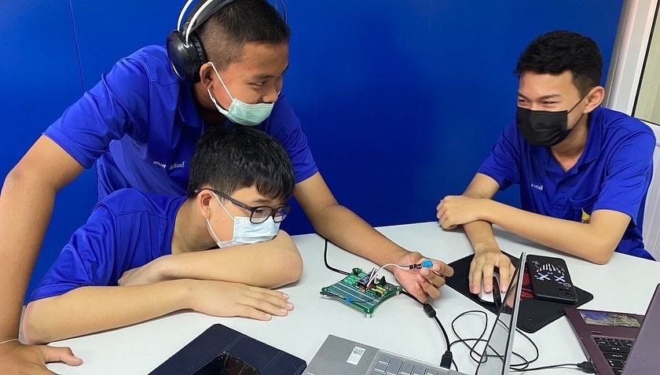 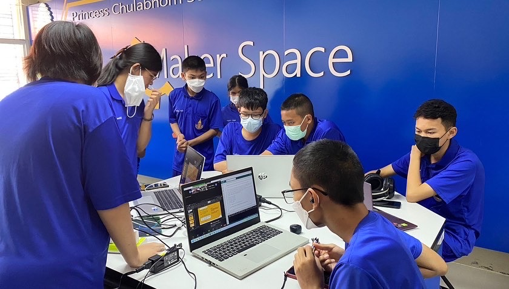AI & ChatGPT Workshop-August 3, 2024
Attending an AI workshop gave me a clearer understanding of artificial intelligence concepts and their practical applications. I learned how AI can be used to solve real-world problems and integrate into various fields effectively.
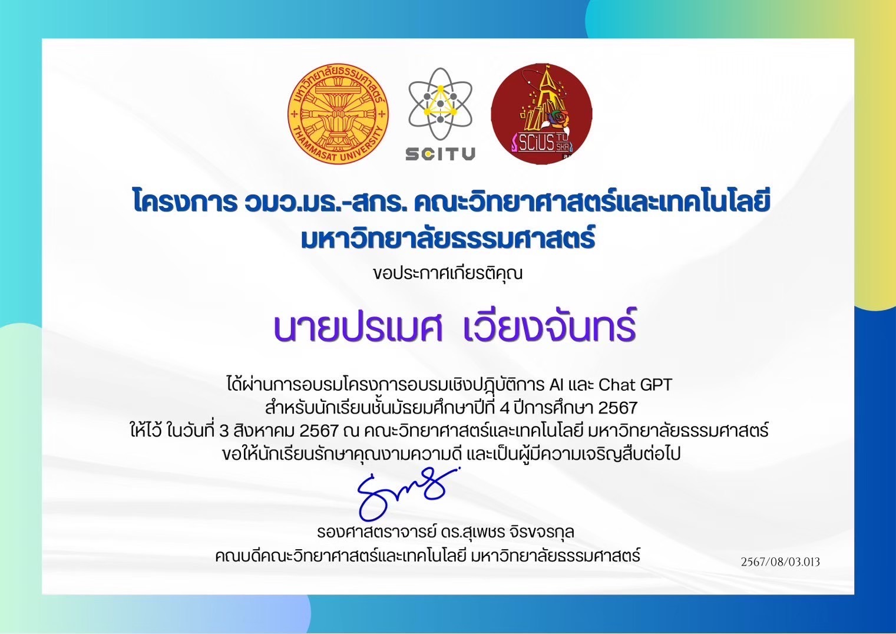 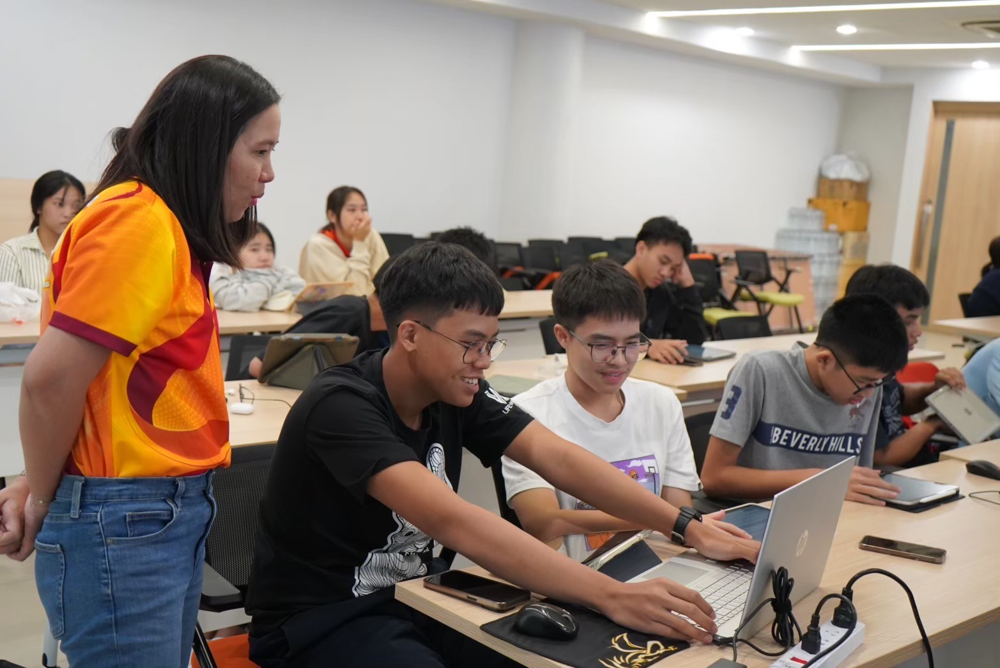Project
Mathematics Graduation Project: Visualizing the Pythagorean Theorem
This project aimed to deepen students'understanding of the Pythagorean Theorem by simulating volume-based demonstrations using liquids. The goal was to present a tangible, visual way to comprehend the concept, enhancing both intuition and engagement in learning mathematics.
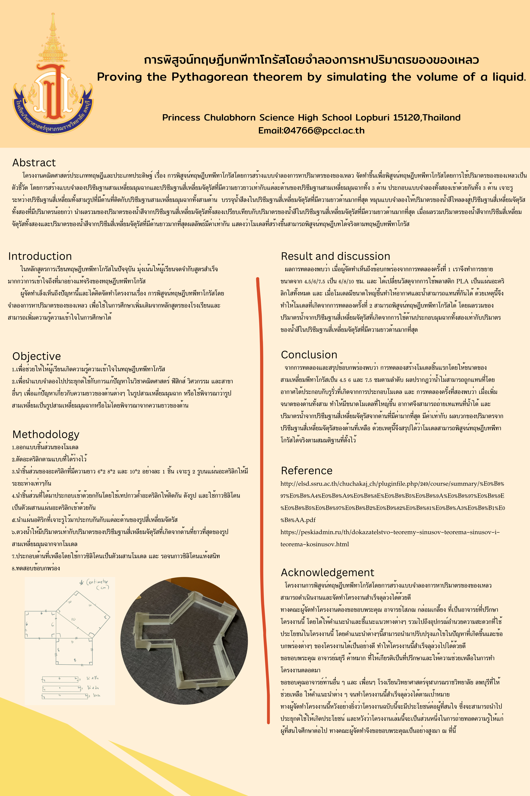 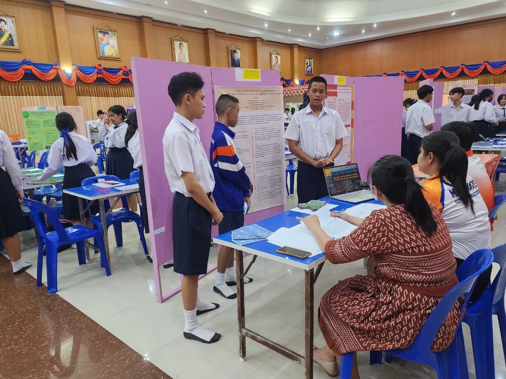